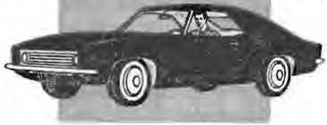
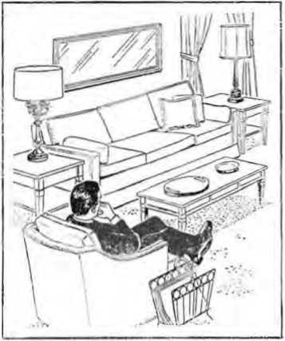

IV "AWAKCI" CORRESPONDENT IN URUGUAY
THE REASON FOR THIS MAGAZINE
News sources that are able to keep you awake to the vital issues of our times must be unfettered by censorship and selfish interests. “'Awake!" has no fetters. It recognizes facts, faces facts, is free to publish facts. It is not bound by political ties; it is unhampered by traditional creeds. This magazine keeps itself free, that it may speak freely to you. But it does not abuse its freedom. It maintains integrity to truth.
The viewpoint of "Awake!" is not narrow, but is international. "Awake!" has its own correspondents in scores of nations. Its articles are read in many lands, in many languages, by millions of persons.
In every issue "Awake!" presents vital topics on which you should be informed. It features penetrating articles on social conditions and offers sound counsel for meeting ihe problems of everyday life. Current news from every continent passes in quick review. Attention is focused on activities in the fields of government and commerce about which you should know. Straightforward discussions of religious issues alert you to matters of vital concern. Customs and people in many lands, the marvels of creation, practical sciences and points of human interest are al! embraced in its coverage. "Awake!" provides wholesome, instructive reading for every member of the family.
“Awake!" pledges itself to righteous principles, to exposing hidden foes and subtle dangers, to championing freedom for all, to comforting mourners and strengthening those disheartened by the failures of a delinquent world, reflecting sure hope for the establishment of God's righteous new order in this generation.
Get acquainted with “Awake!" Keep awake by reading "Awake!"
Published Semimonthly by
WATCHTOWER BIBLE AND TRACT SOCIETY OF NEW YORK. INC 117 Adams Street Brooklyn. N.Y. 11201, U.S.A.
N. H. Knokb. Presided? Grant Suiter, Secretary
Average printing each issue: 4,650,000 Five cents a copy
Yearly wibtrrlptfon (&U*
Offices fur 9-rJmonthly editions
America, U.S., 117 A<; .1. ■ . .. B*< 1 X V 11201 >1
Australia, 1! Beresford Kd., StrailXd. N-S.W.
Canada, 3 50 Brldrehr. I Are.. Tori’.- : J Ont
England, Walch Tower lh-i
Naw Zealand, 021 Neu North Rd ' Mai d S W 7-k South Africa. Private Rag 2, P 0 Ehnr.’i-i*|n TrL 70--
(Monthly editions cost half the abova rates.) Remittances for subscriptions should be to the o'" i0 »u«r country. Otherwise tend your remit U ••r» to Brooklyn. Hutlee of expiration is aent al kasl v- •» Ls-un before '•'•kerlpUoo expires.
Now published in 26 languages Semimonthly—Afrikaans. Cebuano, Danis!). Dutch, English. Finnish, Fr.urh. German, Creek. Iloko. Italian. Japanese, Korean, Xonrogiau, FortMQttese, Spanish, Swedish, T.’g.ilo^. 'Zulu.
Monthly- -CiPr <. Cinvanja, Hlilgaynon, Ahh.talam, Polish. Tomii. L'krainiuii
|
CHANGES OF ADDRESS shoald reach us thirty |
days | ||
|
before your moving date. Give |
its year |
old and |
new |
|
Rddresr (If possible, your old |
addrm |
label). |
Write |
|
Watchtower. 117 Adams Street. 11201. U.S.A. |
Brooklyn, New |
York | |
Second-class paid al Brooklyn. N.k ItlntH in U.S.A.
The Bible translation regularly used In "Awake!” Is ths New World Translation of the Holy Serlpturrj, 1961 edition. When other translations are used, this is clearly marked.
CONTENTS
Autumn—the Year at Rich Maturity 13
Does It Pay to Own an Automobile? 17
“Your Word Is Truth”
Did Jehovah Foreknow that Adam
Volume XLVIII Brooklyn, N.V., October 22. 1967 Number 20
TWO girls, one fourteen years old, the other fifteen, walked up to a total stranger in Greenwich Village, New York, and asked: “Hey, where can we cop some acid or pot?” The girls were inquiring about drugs. They were out seeking a thrill, a short "trip out of this world,” a “holiday from reality” by means of drugs. This may sound harmless to some, but the fact is that just one experimental use of drugs can ruin their lives, even kill them.
Young people today are in search of excitement, "instant” happiness. They are being told that they ought to get “fun” out of life, and the less real fun there seems to be, the greater their search and rush to fill the vacuum with the deceptive pleasures of the forbidden and the dangerous. “It was like we were doing something wrong that was fun—like eating candy before breakfast,” explained an addict. But it is not at all that innocent.
You young people may hear other youths argue that the use of drugs is merely “harmless fooling around and a sign of healthy curiosity.” But there is nothing “harmless” about it, and curiosity, improperly channeled, can wreck your lives.
This is what happened to a blond girl, no more than fourteen years old. The police found her lying on a filth-strewn floor. Her eyes were blank and her fingers clawed at the figures in the design of the linoleum. She was living with a middleaged man. Just eight months before, the girl had been a normal, healthy highschool freshman from a “good” family— until a schoolmate introduced her to drugs. Now she was on the floor trembling violently. On the dresser were hundreds of white pills. “That kid’s been taking about thirty of these a day,” a policeman said. "We call them whites, bennies. If you looked the words up in a drug catalog you would find them listed under amphetamines—those nice, respectable diet and wake-up pills."
Commissioner George P. Larrick of the United States Food and Drug Administration says: "Nearly ten billion barbiturate and amphetamine pills and capsules are produced each year by the pharmaceutical manufacturers. Half of these—or five billion pills and capsules—are being diverted into unauthorized channels.” Sergeant Eugene Zappey of the Juvenile Narcotics Squad of the Los Angeles Police Department stated that “pills have replaced marijuana as the steppingstone to hard narcotics addiction. Five years ago, eighty percent of our problem with kids was marijuana. Now it’s close to eighty percent pills."
The use of drugs in America is fast becoming as common and popular as chewing gum, big cars and television. It is not only adults who are involved. New York police records show that arrests occur even in the seven- to fiftecn-year-old age-group for the use of amphetamines and barbiturates—drugs that not only are themselves dangerous but can lead to narcotic addiction, crime and death. Another New York City report stated that between 1963 and 1964 there was "a 75 percent increase in the number of children under 16 years of age taken into custody for criminal offenses who were admitted narcotics users; a 95 percent increase in arrests for violation of the narcotics law by young people from 16 to 20 years old.”
"Pep Pills" and "Goofballs"
How bad are amphetamines, called "pep pills,” and barbiturates, known as “goofballs”? Misuse of these pills leads to irrational and even violent behavior. A thirteen-year-old boy started on pills when a schoolmate handed them to him. “Man," he said, “when you're on them you feel like you're about the baddest person walking and you’d do anything." He and his partner set out to prove their point. They stole cars, held up stores, attacked innocent bystanders with pop bottles, blackjacks and other weapons. “I was popping those pills in me like they were going out of style,” the one boy said. Then there were murders—cruel, vicious murders. The boys were apprehended in Georgia and tried. Both died in the electric chair. The pills thrilled them, but also killed them.
In Houston, Texas, after swallowing several amphetamine tablets, a man shot and killed a schoolteacher, assaulted a fourteen-year-old farm girl and committed two robberies. In Illinois a truck driver suddenly went berserk after he had taken several pills to keep himself awake. He tried to run down pedestrians with his truck. In Chicago three boys, two of them only sixteen years old, the other seventeen, sat around taking "goofballs.” Then, with a rifle, they went out into the street and calmly shot the first person they saw. They shot the man nineteen times! When the effects of the drugs wore off, one of the boys admitted the murder, saying: “It was the pills that caused me to do the shooting." These drugs are really dangerous, and parents and youths should know the extent of their danger.
Living for Kicks with LSI)
Yes, many young persons today are toying with “incendiary pill bombs” that can ruin them or kill them. LSD (lysergic acid diethylamide) has become part of this generation's illicit pleasure. Living for kicks with LSD ruined four college students who gazed at the sun while under the influence of LSD and lost their reading vision completely and permanently. One of the students explained that he stared at the sun because he was “holding a religious conversation” with it. A twenty-year-old youth stripped and jumped to his death from a roof under the LSD-induced belief that he could fly. Another under LSD influence blew his brains out with a revolver while playing “Russian roulette.”
Early in 1967, a tall, husky, handsome nineteen-year-old student was out seeking a thrill. On April 23, 1967, he was ordered committed to a mental institution to protect him from what doctors said were the aftereffects of experiments with the drug LSD. Investigators said that the boy, unable to stand the hallucinations he suffered—even after the drug should have worn off—tried to gouge out his eyes and kill himself. His mother said: “It was as if there was something inside telling him this is what he was supposed to do. It was as if there were demons in him.”
She told newsmen that her son first tried to kill himself with a razor blade. Then at the General Hospital "he broke a glass, ripped his other arm and his throat. Then, later, he took a pencil and tried to stab himself. Two orderlies grabbed him. But he broke loose and ran and tried to ram his head against a wall and break his neck. Then he tried to poke out his eyes with his fingers,” she said.
His mother revealed that he was a member of a crowd in which, although she did not realize it, just about everyone was trying LSD, pep pills and marijuana. “I must have been living a cloistered life,” she said. “Now I find that just about every party for young people this age seems to have half the people on one side of the room taking what they call a trip on LSD, and the other half on the other side, smoking pot”—marijuana.
Parents, are you leading a “cloistered” life? Are you aware of what your children are doing for entertainment, who their associates are? Do you know what they think of narcotics? Have you cared enough to find out?
Injury to the Unborn
If you are ever tempted by the thought of trying LSD, consider also these facts, reported in Time magazine of August 11, 1967: “Not only does [LSD] break down the chromosomes in some blood cells. The latest evidence is that it causes cell changes suspiciously like those seen in one form of leukemia. Given to a rat early in pregnancy, it usually results in stillborn or malformed young. Worse, LSD may have similar effects on the human fetus. And those chromosome breaks have been found in the babies of LSD users.”
Chromosomes are those minute components of body cells that transmit heredity factors such as eye and hair color, as well as physical and personality characteristics,
RECENT NEWS REPORTS from one generation to another. What may happen if parents have broken chromosomes? Malformed babies, for one thing. The babies may be mentally retarded, have distorted features and inefficient muscles. Doctors say that in some cases the babies may even cry like a cat rather than a human. Thus the use of LSD can also damage the lives of the unborn.
Seven-year-old addicts Teen-age boy sniffs glue—
Twenty-seven r?peS ond murdcr$ ,wo
Woman, 24, sets self on ^e, dies. LSD blamed
10,000 teen-agers in London using dope
Five teen-age Japanese boys found otn
dead from sniffing lacquer thinner feab'e» 0
T.. 800 «»dd‘ „ddU'
Thlrteen-yeor drug °d . .
'<■» W, hX i’nT/YT ille3<"
under influence of LSF. vseof mariluana
Parents react with shocked surprise to report about their children by narcotics squad
Getting "Rooked"
How do youngsters, teen-agers and young adults get started on drugs? It is frightfully easy, almost too easy to believe. The majority have been challenged into trying a hallucinatory drug by “friends.” Many started because of curiosity or a desire to be “in” with their crowd. Some have gone to “pot parties,” where small groups of young people smoked marijuana, and have been enticed to join them. One thing leads to another. Experimental use of marijuana often leads to trying stronger drugs. They are forever searching for new “highs,” and before they know it they are “hooked”— addicted.
Once is often enough to start the drug habit. “I got this awful toothache and Johnny gave me a shot,” said a young female addict, “and it took the pain away, and it also took my fear of drugs away. I started doing it myself. And I had a habit before I knew it ... It made me very relaxed, very high. I liked it. Nothing fazes you. You could hear about your mother dying an excruciating death and you wouldn’t even shod a tear.” This young girl turned to prostitution to maintain her drug habit, as almost all female addicts do.
A sixtecn-year-old high-school student said: “I had this cube that somebody gave me. I was carrying it around for three weeks wondering if I should try it and then I just popped it in. I thought it might give me a better idea of myself, like what I’m all about, what I'm here for.” The drug turned him into an addict and a thief.
Another youth stated: “I heard so much about it, that you could see all the wonders of the world right in your own mind, I figured I had to try it." He did. His curiosity got the better of him. This seventeen-year-old boy has never been normal since.
“I took marijuana on a dare,” said a twelve-year-old lad. "Somebody told me I wouldn't be able to take it, that I was too unstable. I took it." A dare turned him into a drug addict.
A girl of seventeen said that "pot” (marijuana) made her “feel superior." “You take the pot and you find you can join in, and everyone thinks you're a great success." Now she is under a doctor’s care, being treated for gonorrhea. Dr. Nathan S. Kline of New York’s Rockland State Hospital said: "Under drugs like marijuana you tend to feel that you love everyone and the world is a great place. And if anyone wants to go to bed with you, it’s just one more great experience to share.” Therefore, pregnancy and venereal disease become frequent serious side effects of marijuana.
Glue-sniffing sounded like a lot of fun to a sixteen-ycar-old girl. The next thing she knew she was in a hospital. “I know I never should have started on glue,” she said, “but the other kids were doing it and it sounded like fun. At first, I sniffed just occasionally for kicks. Then pretty soon I couldn’t stay away from it.”
These young folks cannot seem to get it through their heads that drugs are "dynamite." They destroy people. When 1,000 youngsters were medically examined for aftereffects of glue-sniffing, tests showed liver, kidney and lung damage, and abnormalities of the blood that often lead to anemia and death. Excessive marijuana smoking can produce brain and lung damage. Records show that one out of three who start on “soft" drugs, such as glue and marijuana, will in time use even more harmful drugs, and that over 35 percent of these who start will become addicted. Only about 2 percent who go into addiction manage to get themselves out of the pernicious habit. The other 98 percent? Their lives are smashed and wasted.
Parents, think seriously. What are you doing now to safeguard your child against drug addiction? What are you doing to help him cope with the temptations, the curiosities he may have about drugs? How are you aiding him to face “dares," his own loneliness and anxieties? Surely the best drug “cure” lies in prevention, and preventive education must begin at home with the parents. The present growing popularity of drugs among youths and adults demands that you inform your child about the dangers of drugs immediately. The situation is that urgent.
Gaining in Popularity
Drug users used to be almost always linked with rootless, friendless children of the poor, children of broken homes with no rules to live by and no goals but "kicks.” But not so anymore. Drugs have found a prominent place among “respectable” suburban brick homes along clean, tree-lined streets. More and more marijuana is present at parties. “It’s a social gesture to offer friends marijuana like offering them a drink,” said a well-groomed young man. “The boys and girls think they have to become hip to be accepted socially and the way to become hip is to use narcotics,” said an acting New York police chief. It is becoming increasingly popular to become “high” on marijuana as a natural conclusion to a dinner party.
College students have also joined the drug parade. Among them smoking marijuana has become the “in” thing, the “cool" thing to do. They say it is a way of “finding out more about life.” Most college students are interested in mind effects. So to them marijuana is “the ideal high.” "We are living in an era of sensate culture," said a student, “a time of gorging the senses and ignoring reality.” Remarked another: "Experimentation is a part of the college experience. We need mental stimulants to heighten our awareness.” In 1965 a study of students at Oxford University revealed that 200 undergraduates were taking drugs every day and 1,000 others were doing it whenever they could get them. In America, student users estimate that up to 30 percent of the undergraduates now use marijuana.
Martin Gold, president of the Cornell University senior class, gives another, darker reason for what he estimates as a 600-percent increase in the use of marijuana since he registered at Ithaca. “At a university, where intellectualism is paramount,” he said, “there is the feeling that there is no meaning to life, no God, and that all the works of man will have no meaning when life is done.” Thus students turn to drugs, Gold believes, to ease or eliminate the pain of living in a spiritual vacuum. In other words, this materialistic world, this ‘world without God,’ is in effect a dream world from which its very builders and youthful supporters are escaping by whatever means possible, even by drugs.
You young people, is this the life you want, an escape from reality into a drug-concocted dream world? What do addicts themselves think of their life? It is like “a revolving door,” they say. They feel trapped by their craving for drugs. To get them they steal, soon find themselves in jail, in a hospital, and thus start the degraded cycle over again. “We are animals,” said a young female addict. “We are all animals in a world no one knows. We’ll step on one another for a shot if there's no dope. I'm no different from any of the others. I’ll beat somebody for their money just as fast as look at them. That’s why I say we’re animals.” Is this the life you want?
Some young persons try to justify their use of drugs because of the difficult times in which we are living. That these are critical times, there is no doubt. We are living in the death throes of an old system of tilings. Nearly everyone today needs help outside of himself to face the critical times in which we live. And youths are no exception. But there are other and better ways to get help than by means of pills or marijuana.
Use of narcotics appears to be an easy way out, but it leads only to greater frustration, an empty life and an ugly death. It may be more work to find positive ways of dealing with the frustrations and the anxieties of life, but the hard ways are by far more rewarding to the mind and body than drugs. Such positive sources of strength are true religious faith and a deep relationship with other people, primarily people with faith in God. But, as a safeguard, youths and adults also need to see the dangers of drugs and the utter futility of addiction as a way of life.
What are you parents doing to offset the subtle, disarming arguments hurled against young minds that must venture into a world that has thrown away all moral responsibility and restraint? How are you fortifying your child spiritually so that he will not give in to his owi weakness, his own desire to please and to be one of the crowd? This is your responsibility as parents. Now is the time to help your children to walk uprightly in decency and dignity before God and men by safeguarding them against drug addiction.
commission chairman. “You should help the poor, not wait until they become ad-
WVVTHY waste money in trying to treat W addicts, because they are, for all
practical purposes, dead?” so said a New
York building inspector at a luncheon in the Towers Hotel in Brooklyn on June 1, 1967. He had just listened to a discourse delivered by the chairman of the New York State Addiction Control Commission, Lawrence W. Pierce. But the inspector’s views were different from those of the diets,” he said, “because then they are as good as dead.”
Commissioner Pierce replied: “We reject the notion that an addict is dead. We regard him as a human being, with a potential.”
Just then a well-dressed young man rose from his seat and said, “I’m one of the dead that the inspector spoke about. I’ve been back alive nine year’s. And we have 25 other 'dead' people who will be taking civil service examinations tomorrow.” This one voice in behalf of the ‘'dead” raised the hopes of the social workers and community leaders at the luncheon that perhaps there is a way out of this drug impasse.
Cures, however, are admittedly rare. And as Commissioner Pierce himself admitted, nothing as yet has been found that can assure a cure for every drug addict who seeks it, or even for a majority.
No Absolute Medical Cure
When a student at Rye High School in New York asked: "How do you stop taking drugs?” he was told that one must “go to a hospital.” But is it as simple as that? No, by no means. "I was on junk I heroin] for almost fifteen years,” writes a male drug addict. “In that time I took ten cures. I have been to Lexington [hospital] and have taken the reduction treatment. I have taken abrupt withdrawal treatments and prolonged withdrawal treatments; cortisone, tranquilizers, antihistamines and the prolonged sleep cure. In every case I relapsed at the first opportunity." Hospitals were no help to him. What assurance does anyone have that hospitals will cure the drug addict? There is no assurance.
Some addicts have taken methadone, which is an opiate stronger than morphine and quite as addictive, in an effort to stop the habit. Others have been treated by apomorphine. But the fact remains that about 90 percent of those treated at the United States Public Health Service Hospital in Lexington, Kentucky, sooner or later revert to drugs. This means that official agencies have failed to solve the narcotic’s problem. Nonofficial agencies have done little better. The cure, therefore, is not simply the going to a hospital, and no young person should think so.
There is no guarantee of a medical cure for drug addiction. Realizing this and how serious it is, is one of the first steps in avoiding drug addiction. Truly, the way to avoid drug addiction is never to start taking drugs. That is the safe and sure way of protecting yourself from addiction.
Watch Your Associations
In this age of pill takers and thrill seekers, avoiding drug addiction may not be as easy as it might appear. The Bible, however, wisely advises: ‘Watch your associations.’ (1 Cor. 15:33) To avoid drug addiction this warning must never, yes, never go unheeded. Narcotic authorities are convinced that most users of illicit, narcotics acquired their habits through association with the dope-ridden criminal element. A drug addict admitted: “Many junkies infect other people. Because you don’t like to feel different all the time, beyond the pale. So you try to turn somebody else on." And to give in to their wishes only once may be enough to destroy you. Therefore, shun the company of drug addicts, for it may mean your very life!
The best way to shun bad associations is by cultivating good, clean companionships, especially the associations of people who love Jehovah Gori. The apostle Paul advised the young man Timothy: “Flee from the desires incidental to youth, but pursue righteousness, faith, love, peace, along with those who call upon the Lord out of a clean heart.” (2 Tim. 2:22) This means you must set your moral standards high and associate with people who will help you to maintain high Christian principles.
Control Curiosity
Another rule to bear in mind is this: Do not let curiosity get the better of you. The Bible again wisely admonishes that Christians be “babes as to badness” and that they practice “self-control." (1 Cor. 14:20; 2 Pet. 1:6) Control your curiosity about drugs and the addicts' corrupt way of life. Do not lower your Christian standard for anyone, not even in your thoughts.—2 Cor. 10:5.
Do not allow yourself to be tempted into doing what is wrong. Know that you gain absolutely nothing and can lose everything, even your life, by taking a single dose of drugs. To avoid addiction, control your curiosity.
Flee from Their Dares and Enticements
Still another rule to remember is, Do not allow yourself to be “dared” into taking drugs. Let them call you “chicken.” They are the weak ones, for they are enslaved to their relentless cravings and to their corrupting habit.
Further, do not tarry in the presence of addicts or listen to their arguments for taking drugs. Know that their subtle, wicked reasonings may weaken your will to resist. They may argue that drugs are less harmful than whiskey. One may conclude, “O well, this once won’t kill me.” Yet once may be all that is necessary to set one in a way that leads to thievery, muggings, prostitution, disease, murder, hospitals, prisons. Is that what you want? If not, do not listen to an addict. Get away from him.
Parental Supervision Needed
Where young people are not addicted to any drug, but may be toying with the idea, the parents can do much to help such youths by teaching them the dangers of drug addiction. Be sure they read this issue of Awake! or, better still, read it to them so that you will be sure that they get the points. Tell children the truth, the terrifying consequences of drug addiction, of the ever-present possibility of opening the mind to demon obsession, the risk of losing God’s favor and life.
These young people need firm parental supervision. Insist on knowing who their companions are, what they think about drugs, and also about their moral habits.
Daily assure your children of your love and concern for them. Spend time with them, doing things as a family unit. Surprise them by taking them to places from time to time. Initiate programs for them that are creative. Also, couple this recreation and play with Bible education. Cultivate in them a close relationship so that they will feel free to confide in you and trust you. By your associating with them in this manner they will learn morality, decency, respect for God and man, and the wisdom of living according to Bible principles. It is your loving concern for them that will prove a deterrent and a safeguard in times of temptation and trial.
But where children are already addicted to drugs, this fact also must be faced realistically. Recognize that the situation is a serious one and that the youth’s fight back to a normal life will be a hard uphill climb and that he will need all the help that he can possibly get. There may be many relapses; there usually are, before any sign of success may appear. It may be necessary, in some cases, to commit the youth to a hospital for a while. But the hospital will not fight all his battles. After he is released, he will still have to make his life over. He will need a lot of help to get a firm grip on the principles of right thinking and wholesome conduct.
What will help him now is the same thing that could have safeguarded him against addiction in the first place. What is that?
,4 Living Hope
There is the need of giving youths a hope, a reason for living, a reason for remaining moral. Many youths think this can be found by escaping into their chemical-born dream world. Not so. Addiction only compounds their difficulties. They need to face up to the fact that God made man, and that if they are ever going to understand the real reason for living they have to turn to his Word and conform their lives to it. They must do as the Christian apostle Paul counseled: "Quit being fashioned after this system of things, but be transformed by making your mind over, that you may prove to yourselves the good and acceptable and perfect will of God.” (Rom. 12:2) Doing the perfect will of God is the all-satisfying reason for living.
When persons learn that. God's kingdom is a real government created for the purpose of blessing mankind, and that they can serve that government here on earth, that realization gives them reason to live, to be morally clean and loyal. (Matt. 6:9, 10; Dan. 2:44; 1 Cor. 6:9, 10) It introduces them to a moral society, to clean associates dedicated to doing the will of God. It provides them with transforming power, a reason to make anew their personalities in a new way of life. They learn that there is satisfying, purposeful work for them to do in helping others to learn and do the will of God. —Col. 3:1-14.
But does this really help? Is it just theory, or is it fact? Listen to a young man in his twenties who, in his own words, used to take "marijuana, amphetamines, barbiturates, the works," and who in July 1967 had this to say: "I was an altar boy for six years. When I was fourteen, I started to take dope. As a Roman Catholic I thought I knew my religion, but I never believed in such a thing as absolute truth. One day one of Jehovah’s witnesses showed me in the Bible the cause of death, that hell was the grave, God's purpose for a paradise earth. I saw where Jesus had brothers. This amazed me. I was fascinated with Bible truth. I couldn’t get enough.
"At first I was very, very nervous— shifty eyes—the works. But Jehovah’s witnesses were very kind. They always included me in their activities. As time went on they saw that the Word of God, the things I was learning from the Bible, was having a desired effect on me. I knew I must break up all bad habits, not only marijuana but also cigarettes. One day I pulled a pack of cigarettes out of my shirt pocket and threw it away, and that was that as far as cigarettes were concerned.
"I have always enjoyed clear thinking. This was the way to get more enjoyment out of life. Studying the Bible regularly and learning about the Kingdom, how it will rid the earth of all wickedness, resurrect the dead, do away with poverty, sorrow and death was rewarding—inspiring! It gave me a clean conscience. It gave me an unusually wonderful feeling. In two months I progressed to a point where I was baptized. On October 5, 1957, I became one of Jehovah's witnesses." Now he detests the very idea of drug addiction.
Make no mistake about it; it was not easy. There were times when he got depressed, but application of Bible principles helped to pull him through. He says: “The ones that helped me draw myself away from narcotics were Jehovah’s witnesses, the people who taught me the Bible. I was seeking the ‘happy life,' but it had its bad side effects. I knew that, drugs eventually lead to crime and disease, and I didn’t like it. I didn’t like where it was leading me. Then when I met Jehovah's witnesses, that did it. I drove this Witness to one of their assemblies. I dropped her off. She asked me to stay, but I couldn't. But I saw people, colored and white people, mingling together. They were happy. This was the first time that I saw genuinely happy people in association together.
“When I was in company of drug addicts. I was always afraid of them. I feared them. They would steal from you, turn you in to the police, cut your throat for nothing. But when I was among the Witnesses, I felt that I could trust them. I immediately stopped associating with the addicts. In fact, the Witnesses told me I had better do so for my own protection. A Witness invited me to his home. He helped me to get away from the association of addicts. For a couple of weeks I went over to his place every night as soon as he came home from work. We talked the Bible until midnight and later. I grew afraid of the addicts. It was like swimming in the ocean; after getting out you see that the water was filled with sharks. A fear comes over you when you realize how close to destruction you were. This was the feeling that came over me.
“There were times when I got depressed, when I felt as if the walls were caving in on me. I’d go for a phenobarbital, a pill, anything. Then I would catch myself. I knew that this was no way to combat my depressions. I would call up the brothers [Jehovah's witnesses] and they would come over or invite me over. After a while the desire left completely. I really don't get it anymore."
How wise the inspired counsel of the Bible: “Two are better than one . . . For if one of them should fall, the other one can raise his partner up. But how will it be with just the one who falls when there is not another to raise him up? . . . And if somebody could overpower one alone, two together could make a stand against him. And a threefold cord cannot quickly be torn in two”! (Eccl. 4:9-12) This principle highlights the wisdom of good, clean associations. Accept this inspired counsel. Appreciate the need for wholesome Christian association. The moral and spiritual strength from such association will pick you up and be a protection to you. You will be in an immeasurably better position to avoid drug addiction.
Power to Change Lives
The power of true Christianity, therefore, protects persons by building secure, mature, new personalities that do not need to be propped up with chugs or any other chemical crutch. It aids them to put away their former course of conduct that was being corrupted according to its deceptive desires. These ones are made new in the force actuating their minds. This helps them to put away falsehood, to speak truth, to avoid drug addiction, to live upright lives to the glory of God. Notice how the apostle Paul verifies this truth. After mentioning adulterers, thieves, greedy persons, drunkards and other unseemly personalities, he says: “Yet that is what some of you were. But you have been washed clean, but you have been sanctified, but you have been declared righteous in Ute name of our Lord Jesus Christ and with the spirit of our God." (1 Cor. 6:9-11: Eph. 4:17-32) The power of true Christianity changed them and its power has changed the lives of drug addicts as well in these modern times.
Do not underestimate the power of God’s Word. (Heb. 4:12) If it can change one, it can change others. “With God all things are possible," said Jesus. (Matt. 19: 26) A study of God’s Word in association with Jehovah's witnesses can help you to avoid drug addiction, by filling you with a living hope, the hope of living under God’s perfect government, his kingdom.
So ask yourself: Is one superficial, questionable thrill, one “kick" from drugs worth losing the hope of living forever? Is it worth corrupting oneself into a prostitute or a thief or a murderer? Is it worth exposing oneself to demon possession, to prolonged depressions, epileptic convulsions, to hepatitis, venereal disease, to brain, liver or kidney damage? Is it worth wrecking one’s mind, becoming a mental patient or a prisoner for life? Nothing is worth that price! Your being convinced of that fact will prove to be a priceless protection for you in these critical times.
IN THE stillness of an October or a November evening up north come the distant sounds of honking geese and quacking ducks, the thrilling sights and sounds of birds flying southward in “V” formations. As the golden rays of the autumn sun begin to fall at more of a slant, casting an amber light across fields where corn has been hulled, there is the call of the pheasant and the flutter of wings. The marshes and lakes are suddenly covered with thousands of birds resting and feeding between flights, as they prepare to resume their journey toward warmer regions. The hoot of an owl and the bark of a fox can be heard in the distance. With the passing of evening’s golden haze, the night becomes cool and there is a touch of frost in the air. A wondrous change is about to take place ovei’ the northern half of the earth.
Since earliest times the sounds and sights of autumn have awed man. He has
marveled at the enormous transformation that suddenly surrounds him. Much of creation unfolds in resplendent beauty. Plants, insects, birds, fish and mammals seem to be working feverishly in rhythmic harmony with the earth, preparing for the coming winter.
For each creature autumn has a special meaning. To man, especially in rural areas, it is harvesttime. The squirrels, the deer and the wild turkeys enjoy the drop of acorns and beechnuts, the eating of windfalls in the orchards. The woodchuck makes last-minute preparations for his long winter nap.
In the countryside autumn is the time for tasting fresh honey from the honeycomb, when apple cider is at its very best. It is when the mow in the barn is filled to bursting, when jam closets and cold pantries are stocked with the year’s goodness. It is a time of rejoicing, as when the ancient Israelites rejoiced before Jehovah their God at harvesttimes. It is a time when appreciative ones cry out to God, as did the psaimist: “You have crowned the year with your goodness.” —Ps. 65:11.
This is the time of the year when a blanket covering during the night feels good. But the cold does not come to stay. Days are warm with a fresh autumn tang. Vociferous crickets, katydids and grasshoppers form the season's symphony orchestra. With remarkable regularity they produce loud chirps, about 160 of them a minute. It is said that if you count their calls for 15 seconds and add 40, you will have the approximate temperature! Also, the insect’s warmth can be estimated according to the musical scale. At 70 degrees F. he calls in F sharp below middle C. At 86 degrees the cricket's excitement rises to middle C itself. As the temperature drops the chirps get farther and farther apart until they stop entirely toward the late night hours.
Even though the sky is cloudless and decked in azure blue, yet the plants are busy readying themselves for the bleak winter days ahead. All but tire evergreens have ceased to carry water to leaves and buds. The leaves and frailer stems shine suddenly with a beauty that defies description. The magnificence of the woodlands, the spectacle of leaves, where color changes day by day, make one stand in wonder at the creation of God. “Do give ear to this, O Job," said the young man Elihu to the ancient prophet. "Stand still and show yourself attentive to the wonderful works of God.” (Job 37:14) The impact of these words can be specially appreciated when one is surrounded by autumn’s wonders.
Creation’s Festival Dress
Only three large regions in the world are affected by autumn coloration. This is a feature unique to temperate, deciduous forests. The color display is particularly well developed along the slopes of the Alps and in the Rhine and Danube valleys and parts of the British Isles. Eastern China, portions of Japan and North America are the other regions where autumn color is to be found in all its dramatic glory. Elsewhere only limited areas present displays of autumn color.
In the northern hemisphere patches of pure-gold aspen appear in a crazy-quilt fashion against the dark-green backdrop of spruce, fir, hemlock or pine. Perhaps, the maple tree, in the zenith of its coloration, is—more than all other trees combined—the crowning glory of autumn. Henry David Thoreau, American naturalist and essayist, wrote of the maple: “How beautiful, when a whole tree is like one great scarlet fruit full of ripe juices, every leaf, from lowest limb to topmost spire, all aglow, especially if you look toward the sun! What more remarkable object can there be in the landscape? Visible for miles, too fair to be believed.” Little wonder, autumn has been likened to a happy woman in festival dress.
Close to earth wild asters, goldenrods and gentians are in bloom. The larch glows like a great cone of golden feathers and the lemon-yellow flowers of witch hazel are set off against the deep background of the evergreen. Leaves of other trees have changed to brilliant crimson, russet and gold.
In small villages where huge maple trees have lined the streets, there are the exciting sounds of children raking and the smell of burning leaves. There may be other times as good as late autumn to go hiking, but for many there is not a better one. To walk with the scuffle of new-fallen leaves, to feel the mild sun, to have the company of busy squirrels and restless ducks on the river is to know the marvel of autumn, a wonder of God. It is to know, perhaps, in a small way how the psalmist felt when he uttered the words: “How many your works are, O Jehovah! All of them in wisdom you have made. The earth is full of your productions.”—Ps. 104:24.
Busy Little Creatures
Down in woodland's paths insects hurry along. Furry caterpillars ripple quickly over plants and leaves. Many have finished feeding and have found themselves a place in which to transform into a moth or butterfly. But not so the drowsy bear. He has been laying in fuel, in the form of the thick layer of fat, for nourishment and warmth in the cold days ahead. For a topcoat, he has put on a fine new woolly pelt. Unlike the caterpillar, he will still be a bear in the spring, only very hungry.
The groundhog is fat. His coat is sleek and wavy as he moves. He has put on three and a half pounds since spring, and he now weighs about ten pounds. This fat. is his winter store of food. He will not even have to reach for his dinner while he hibernates, snug and dry, deep in his underground apartment. He is ready now for a long winter snooze.
The chipmunk, too, has been eating well all summer. During the warm summer days he has teen enlarging his subterranean rooms and passageways, particularly the bedroom. Hard work went into repairing his home with an extra lining of warm leaves and patching the weak spots. For several weeks now he has pressed hard seeds under the matting of his ted of fine twigs. This will be his winter food supply. His cheek pouches bulging with food for storage make the chipmunk look as if he had the mumps. All his spare rooms are packed with goodies. Excitedly he raises himself on his hind legs and triumphantly voices a series of sharp chirping calls, as if to say, ‘Another frost and off to bed I’ll go and you won’t be seeing me again until next spring!'
Season for Moving
The nip in the autumn air warns the human population to look to the fuel supply, check the furnace and get the topcoats out of mothballs. Some people make preparations for a “flight1’ south to avoid the rigors of the coming winter. They board up their summer homes and head down the highways toward their winter homes. And there are birds, fish and mammals that do the very same thing.
The heavily antlered North American elk and Canada’s caribou, sniffing the first tang of snow in the high mountain air, sedately gather under the trees and file down from high mountain passes in small bands as the snow creeps down from white peaks. From the free windswept tundra of Canada, herds of caribou head south along their regular routes, crossing turbulent streams, rocky ridges and other obstacles in their 400- to 500-mile trek to the lower ranges and warmer valleys.
The rare white polar bear, weighing close, to 1,200 pounds, begins his journey across the ice caps of the polar regions southward in pursuit of his meal—the seal. In the Bering Sea, mother and baby seals slide off volcanic islands and head down the Pacific coast. The female Alaska fur seal swims with her pups some 3,000 or more miles from the cool breeding grounds of the Pribilof Islands in the Bering Sea to south of California.
Seventy-ton whales also silently slip their bulk through Arctic waters and head toward tropical destinations. Each year the humpback whale swims from East Africa and Malagasy to the Antarctic continent and back again, a distance of some 4,000 miles.
Other sea creatures that migrate with the change of seasons include the delicious tuna that travel from the waters of Iceland to Africa, and smaller fish, such as mackerel, sardine, cod, whiting and haddock. Even the blue crabs of Chesapeake Bay move a few miles up and down the placid inland waters each season. Each of these creatures behaves as if someone had told them when to move and where to go. Man cannot help but marvel at this.
Air Travelers
Birds are the most famous of all autumn travelers. The gray Arctic tern flies a total distance of about 22,000 miles each year. This bird nests above the Arctic Circle in the summer, then flies south to spend the winter below the Antarctic Circle, returning to its Arctic home for the next summer. The great shearwater ranges the entire Atlantic Ocean. Yet in the fall these birds return to the islands of Tristan da Cunha, mere specks in a giant ocean, a navigational feat that is a challenge to man with all his modern scientific instruments.
The barn swallow abandons his home in the northern part of America and flies over the Gulf of Mexico and the Caribbean Sea to spend the winter in South America. Ruby-throated hummingbirds too excite wonder and admiration by their autumn flights. These tiny birds, barely three inches in length, regularly fly across the Gulf of Mexico, from the United States coast to Yucatan, on their way south. This is a flight of 500 miles across an open ocean for those little wings.
In Canada, fragile butterflies with their tiny wings quivering gather in thick clusters. On just the right breeze they rise and drift southward. The black monarch butterfly is known to cross thousands of miles, even oceans. Divinely provided instinct warns the butterflies of winter’s approach. It guides them over trackless oceans and land and causes them to stop on the same “butterfly trees” that their foreparents used year after year.
In the south of France, a family of wasps wing their way up to an elevation of 6,000 feet and there cluster for the winter under stones in a sort of coldstorage vault that keeps them inactive until spring. High in the Rocky Mountains of the United States, the bright-red ladybugs spend the winter under clumps of earth. Bats spurn the dark, moist caves and zigzag hundreds of miles south when autumn begins to tint the woods with gold and red. Species of the hoary and red bats are known to fly the 2,500 miles across the Pacific Ocean from the United States to Hawaii. What strength in those wings!
Autumn is no chemical accident. To man who finds pleasure in the wonderful works of God it is an inspirational uplift Autumn has a way of reaffirming that “seed sowing and harvest, and cold and heat, and summer and winter, and day and night, will never cease.” (Gen. 8:22) The furry bear, lying asleep beneath a blanket of leaves will arise come spring. The mantis eggs, carefully covered on the branch, will hatch. Some of the acorns that the squirrels planted will sprout. The parasols of the seeding dandelion that floated to earth will soon be having tiny parachute seedlings of their own.
If man needs reassurance of the providence of God, he can find it on every hand by walking appreciatively through autumn’s blazing wonderlands. For at this time the words of the Psalm (145:15, 16) take on new meaning: "To you [O Jehovah] the eyes of all look hopefully, and you are giving them their food in its season. You are opening your hand and satisfying the desire of every living thing.”
EACH year more and more people own automobiles. In the United States alone about 80 percent of all families now own one.
Throughout the world transact business and buy
passenger-car registra- ffhb supplies in town.
bse tomobiles are now being pro-
duced at the rate of nearly twenty million a year world wide.
From this it would seem that owning a
number of the persons who buy automobiles do so, not because they need a car, but for a variety of other reasons. They may
desire to own
car is the accepted and necessary thing. Also, advertising helps to create the impression that nearly everyone should and can own an automobile. However, what is not presented in the enticing advertisements about automobile ownership is the other side of the picture: Does it really 'pay to own an automobile?
In many countries, of course, the question of owning an automobile does not arise, for the average person in most parts of Asia, Africa and Latin America walks, rides a bicycle, or takes public transportation. Automobile ownership is completely out of the question for them because of their very low income. But for many families in Europe, North America, and a few other countries, it is a real and pressing question. For some persons in the more industrialized nations of the world automobile ownership is a necessity in the present arrangement of things. Their work requires it. For such persons, the question of ownership must be answered in the affirmative, because in those countries they would have difficulty doing their line of work without one. In rural areas of these nations it is often a great convenience, and frequently practical, to have a car in order to
However, for many others, it is not a matter of necessity noi' is it really practical. A sizable
an automobile for pleasure
driving, for prestige, because others have one, for the feel of power it gives them, or for other assorted reasons. Many of these can afford an automobile without any hardship to their budget.
But the question of owning a car is particularly appropriate for millions of persons who live in the larger cities of all industrialized nations and who do not have a high income. Many of these persons feel there will be certain advantages to owning one, such as being able to drive to work instead of taking public transportation, or having it available for pleasure driving in the evening, on a weekend or perhaps on vacation. Even though they do not need a car, nor do they have a substantial income, they contemplate purchasing one. Or if they own one already, they feel they must keep it.
Many Things to Consider
To determine whether you should own an automobile or not if it is not a necessity and you have only a modest income, many things must be taken into consideration. For instance, how much use will it get? Will you use it enough to justify the cost? Or will it be used only occasionally in the evening or on a weekend once in a while?
Another point to consider is the availability of public transportation. How good are the facilities for bus or rail travel? In some cities subway and bus systems can take a person for miles quite cheaply. True, the convenience may not always be equal to that of owning a car, but if mass transportation is always available and reasonable in cost, the potential or actual car owner of modest income would do well to weigh public transportation against car ownership.
This brings us to the real crux of the matter. For some with good incomes, the cost of a car can be absorbed and sustained easily. They may even pay for it in cash and maintain it with little strain on their adequate income. But for many, perhaps most others, that is, the average moderate wage earner, the cost of an automobile and its maintenance is the major factor in considering ownership.
What Part of the Budget?
Concerning the cost of an automobile for many wage earners, one financial expert stated: “It used to be considered a sign of affluence for a family to own several cars. Today it is more likely a sign of poverty." This expert means that rhe true cost of running automobiles keeps many families from being able to spend money on more necessary items. Payments on automobiles continually sap their modest incomes so that they must live little better than poor people, except for having an automobile or two to show off.
How much of their gross income does the average family in the United States spend for the expenses of their automobile? Whether they realize it or not they spend almost as much on the car as they do for food, approximately 15 to 20 percent of their income. Only housing (including utilities) takes more of the budget than these items—about 30 percent.
This means that on these three items alone—food, automobile, and housing— many families account for about 70 percent of their income. The 30 percent left will have to be stretched to cover taxes, medical costs, clothing, insurance, recreation, schooling, savings (if possible) and other items that come up each month. From this it can be seen that the cost of owning an automobile is roughly onefifth or one-sixth of the total family budget—not cheap by any calculation.
Calculating the Cost
Just what does it cost to own a standardsized, moderate-priced automobile? Prices vary in different countries, of course, but let us take the United States as an example, since that country has the highest number of car owners.
The average price, in the United States, for a new standard, moderate-priced vehicle is about $3,000. Based on a ten-year ownership and driving about 10,000 miles a year, authorities calculate that it costs about $1,100 each year to own the automobile. This cost includes depreciation, repairs and maintenance, oil and gas, and also other costs such as insurance, tires, accessories, taxes and tolls. Breaking down this cost into a monthly rate, we find that owning a $3,000 car would cost the average family over $90 a month.
However, this cost is calculated on the premise that the owner will keep the vehicle ten years, thus getting the most out of declining depreciation, for the car depreciates much less toward the end of the ten-year span than it does at the beginning. If the automobile is traded in after a few years, then costs go up. For instance, if the car is traded in for a new one every three years, the total ownership cost for those three years would be about $4,500, an average of about $1,500 a year. That is considerably higher than the yearly average of $1,100, based on ten-year ownership.
It is the depreciation, particularly, that makes the cost so high the first three years. Depreciation the first year may be approximately 30 percent, or about $900. The second year it may be 20 percent or less, somewhere between $500 and $600. The third year it might be somewhat above 10 percent, perhaps $300 to $400. The variation depends upon the make of the car, how far it has been driven, its condition, and also market conditions at the time. But, in any event, the first three years of depreciation will gobble up well over half, or, in some cases, approaching two-thirds of the $3,000 purchase price.
The owning of a car is even more costly if the buyer is like the majority of lower-income persons who cannot afford to pay cash. The majority of car buyers make the purchase on credit, paying perhaps one-third down and the rest on monthly installments extending perhaps twenty-four to thirty-six months. Let us assume that on the new car priced at $3,000 the buyer pays one-third down ($1,000) and has to finance the remaining $2,000. Taking out this loan will mean paying more for the car in the long run than just $3,000. Why? Because of the interest, or financing charges. Even at the rather modest interest rate of 6 percent annually, a three-year loan of $2,000 would cost $360. This must be added to the total cost. Thus, owning a car by way of the installment plan is more expensive.
Putting out more than a thousand dollars a year, on the average, for your own transportation is quite a sum if you are a moderate wage earner. If your income is about $5,000 a year, it amounts to about 20 to 25 percent of what you make. Truly, for the moderate wage earner who does not really need a car, this is a luxurious outflow of cash.
Incidentally, there is another hidden item that can really be included in total costs, since you will not have it to spend. It is this: If you had kept the $3,000 in a bank and drawn interest, say the common 5 percent many banks in the United States offer today, you would have 150 extra dollars each year to spend. That $150 alone would go a long way toward paying your public transportation costs during the year. In New York city many can get to work for forty cents a day, the round-trip cost of subway or bus fare at present. This comes to $2 a week for a five-day workweek. For fifty weeks a year, this cost would be $100—less than the interest that would be accumulating on the $3,000 if it had been kept in the bank instead of buying that new car. For those who did not have the cash to begin with, if, instead of buying on credit, even part of the monthly payments had been put in the bank, this would have begun to build up capital and interest instead of being a severe drain on the limited family budget.
Hence, when we add up all that is involved, we can quickly see that owning a new car is a very expensive luxury indeed for those who do not have a high income. It can be seen now why the financial expert stated that, for many, car ownership is only proof that they are living like poor people, because they have to spend so much money on the automobile that they do not have enough left for other items.
Deciding
If an automobile is a necessity, you may not have much choice in deciding whether to own the vehicle or not. You may have to tighten your other expenditures in order to be able to afford the car. However, even here it might be wise to investigate buying a car that is at least two years old, when the worst part of its depreciation will have passed. Then, too, for city use particularly, or for shorter distances, the small economy car is both easy to handle and low in expenses compared to standard models.
But if you are one who does not need an automobile, before making a decision to own one you must determine how much you can truty spend for it. This you can do by realistically noting your weekly expenses for housing, food, medication, insurance, clothing and other things. Once you have made this realistic appraisal of your true expenses each week, then see how much you have left. If your income is $100 a week and your expenses are $90 to $95 a week, you are in a very poor position to own a car. Even if your income is $150 a week, you are in a poor buying position if your outflow is $140 a week. And do not be misled by those attractive advertisements that show low monthly payments. You must figure your true automobile expenses as noted previously, and they are considerably higher than any monthly payment for the initial expense of the automobile. After taking the various factors into consideration, you may decide that a new car is not for you. You may consider, instead, buying a used car. Here, of course, the expenses of ownership are less, as the initial cost is much lower. But note what financial counselor C. Neal, in Sense with Dollars, stated: “Since all cars, regardless of age, must be licensed, insured, gassed, and oiled, it is next, to impossible to operate even a twenty-year-old jalopy for less than $300—at 1964 rates.” Hence, while a used car does not entail the same expense as a new one, the expense is considerable, and usually quite a bit more than public transportation. Indeed, the insurance alone may cost more than the public transportation each year! And without a doubt repair costs are multiplied as the car ages.
ARTICLES IN THE NEXT ISSUE A Reason to Live.
And the Waters Kept Increasing. Tadmor—Storied Oasis in the Desert. Those Amazing Architects That Make Shells.
Keep in mind, too, that regardless of whether it is a new or a used car, there is the problem of parking on city streets. This has become a chronic, even acute, problem in some of the larger cities. And if a parking lot or garage is rented, then the expense of owning an automobile increases greatly.
Some who have owned a car in the city, but did not need one, and have given it up, now find they have more money left than ever before. They can comfortably pay their bills and are able to enjoy other things that they could not enjoy before, such as good food, better clothing and more recreation. They do not have to scrimp and cut corners, because the automobile they gave up no longer drains their income. Really, is it wise to tighten belts and make life uncomfortable and go deeply into debt to own an automobile when it is not needed and is likely to become a burden on the entire family?
So, then, does it pay to own an automobile? Each individual must decide for himself whether it really pays or not. If he needs one and can afford it, he can find it very useful and enjoyable when properly used. If he does not need one and cannot really afford it, it would be the course of practical wisdom to spend the money on the family’s real needs instead.
HOW
GET THEIR
THERE is no business quite like church business. Shielded from virtually all taxes in America, it is not surprising that church wealth has been growing at a rate that makes some businessmen green with envy. For example, in the cities of Baltimore, Washington, Buffalo and Denver, the combined church wealth was $40,000,000 in 1906. In 1964, the assessed valuation of just church-owned real estate in the four cities was $469,000,000. In the United States alone the combined value of all church property of all denominations is estimated at $80,000,000,000! “With reasonably prudent management,” said Dr. Eugene Blake, one of America’s leading clergymen, “the churches ought to be able to control the whole economy of the nation within a few years.”
How do the churches get their money? What variety of methods are used to solicit financial support?
By means of donations alone churches in America annually receive more than $5,500,000,000! According to the Yearbook of American Churches, parishioners of forty-four major Protestant denominations dropped into the collection plate in 1964 a grand total of $3,172,114,782. This by no means covers all Protestant giving. There are more than 200 other Protestant denominations that do not submit financial data to the Yearbook. No comparable figures are available as to how much Roman Catholic and Jewish members contribute to their religions. Still no one can deny that their financial assets must be staggering. As one Roman Catholic priest wrote a few years ago: “The Catholic Church must be the biggest corporation in the United States,” with a branch office in nearly every neighborhood. “Our assets and real-estate holdings must exceed those of Standard Oil, AT&T and U.S. Steel combined. And our roster of dues-paying members must be second only to the tax rolls of the United States government.” And it must be remembered that in America is found only a small part of the world’s religious wealth.
Tiihing Support
One of the main means of financial support for churches and their activity is the flow of tithe money. Even though the tithing system is not truly Christian but a part of the Mosaic law, which came to its end with Jesus Christ, it nevertheless remains a popular practice in Christendom. (Eph. 2:15) The weekly Catholic paper Our Sunday Visitor, as recently as 1962, discovered nearly 300 Roman Catholic parishes where tithing was practiced and 1,250 others where the system was scheduled for adoption. The yearly income of St. Andrew’s Episcopal Church in Wellesley, Massachusetts, had increased from $55,000 to $132,000 since 1954, when the minister began encouraging "percentage giving.” In 1951 Mount Vernon Place Methodist Church in Washington, D.C., inaugurated tithing. Its annual income leaped from $100,000 to $250,000—and up, no doubt, since then. The river of tithe money flowing to Salt Lake City from Mormon congregations all over the world was, in 1965, estimated to total $125,000,-000 a year.
Some church leaders see in the practice of tithing a great potential. If the 123,307,-000 Americans who claim a religious affiliation were to give one-tenth of their personal income to their church, the collection would easily top $25,000,000,000 yearly! That figure is enough to make any financial tycoon whistle long and loud, and the clergy are no exception.
Installment and Talent Plans
In England nearly a half million families are paying regular weekly installments to their local churches in the same way that they pay for their cars, television sets and insurance. Every week they put a set sum, usually between one-tenth and one-twentieth of their incomes, in an envelope for the church. One in seven of England’s 1,600 parishes is already trying this modern method of “pay for religion on the installment plan." Some vicars described the system scathingly as: "Pay now-pray later" and "Heaven by easy payments.” Ministers, as a rule, like it, though, because it brings in more funds than collections do and it seems to give promise of a steady income.
Another scheme to raise money is the "talent plan." Each member is encouraged to increase the church income by some money-making project of his own. A Methodist church in New York invited 127 persons to take a dollar bill from the offering plate and put it to work. Three months later every bill was accounted for plus a profit of 375 percent!
The Professional Touch
Some ministers have trebled their church income by employing professional fund raisers—high-pressure publicity men. Their approach to fund raising is scientific. They provide manuals of instruction, outlines for Sunday sermons on tithing and conscience-pricking bulletins for distribution at services. All of this leads up to "Intention Sunday,” when parishioners make their pledges. Some apply social pressure by asking each individual to make public his subscription, contrary to Jesus Christ’s instructions about gift giving.—Matt. 6:1-4.
Most ministers who have tried the professional scheme are enthusiastic, because it has meant more money. Many others, however, refuse to try it, because they say it commercializes religion. Gift giving no longer becomes a manifestation of one’s faith but a reaction to professional prodding. Often "motivation psychologists” are called in, who claim to increase church giving by as much as 300 percent! Such enticements the clergy find hard to resist.
Ringo and Lottery
Church raffles and the lottery are often used to raise money, even though they have been declared immoral practices by various religious leaders. People have been asked to buy tickets amounting to $20,000 to raise $3,000. In recent years the Roman Catholic churches especially have popularized the raffle by offering new automobiles as prizes.
Churches in America got involved in bingo in the 1920’s when religious organizations began to hire professional carnival men to run bazaars. At first Roman Catholics had mixed emotions about bingo in general. Roman Catholic bishop of Albany, New York, Edmund F. Gibbons made news by becoming the first prelate to forbid bingo gambling on Catholic property. He announced: “The game of bingo in this diocese has ceased to be a harmless pastime. ... It is scandalizing the faithful and bringing contempt on religion."
However, clergy opinion was not unanimous. In fact, out of more than two hundred Episcopal and Roman Catholic bishops, “not more than a dozen or so banned bingo as a means of raising money,” reported Time magazine for December 12, 1938. Today, Protestant churches, Catholic churches, as well as synagogues, engage in bingo gambling to raise money. But, generally speaking, Protestant clergymen are opposed to bingo on ethical grounds, though they do not all oppose other commercial ways to fund raising.
There is no denying that bingo is a rich source of money. A Newark, New Jersey, clergyman claimed his church has made as much as $250,000 a year on bingo! Said English Roman Catholic archbishop Heenan: “Frankly, 1 don’t think we Catholics could get along without bingo.”
Church Sales and Socials
The prominent idea in church socials and sales is to exchange goods, services or entertainment for money. These moneyraising methods take the form of bazaars, entertainment, church suppers, the talent plan, rummage sales and a host of others. One minister called bazaars “an honorable kind of thievery." Another opened a bazaar saying: “You have come to be cheated, and if you have not come to be cheated a little, you deserve to be cheated a good deal."
Regarding church entertainment, one observer, after studying five hundred money-raising occasions, expressed concern ovex- some of the entertainments, leading him to conclude that “nothing could be more disturbing than a review of the list of church entertainments, public performances for money.”
Church kitchens are also a way that some churches raise money. In one year over 400,000,000 meals were cooked. One report said: “There is nothing, it appeal’s, that peps up Sunday School and church attendance like a Pot Luck Supper or a Chicken Stew. The church now travels, like an army, on its belly."
Church rummage sales are popular money-raising schemes. Unwanted items are donated by members and friends of the congregation to be sold at the church or from a vacant store. A church in Chicago said that it netted $20,000 from a single rummage sale.
Some church organizations buy merchandise at wholesale and then sell it at a profit. Hence the church operates on the same basis as a retail establishment, except that, it does not pay taxes in America or conform to the numerous other regulations applicable to a business.
Trading Stamps and Letters
The Bethany Community Church of Fresno, California, conducted a drive to obtain a new church building with trading stamps. The stamps were then exchanged for cash value.
Other churches send letters and cards that plead for cash in return for benefits. “Only one act of sacrifice from someone is required,” says one such letter. “The usual sacrifice asked ... is ten dollars— given only once and the benefits are applied forever." For perpetual enrollment in a seminary guild, according to an envelope, $25 is required for a deceased person; $50 for one during life and after death, and $100 for the family. This giving is all so futile when one knows that the dead do not know anything, as the Bible at Ecclesiastes 9:5, 10 declares.
A pamphlet put out by the Parish Service Company tells churches how to double or triple Lenten offerings with Lenten self-denial folders. "The coin slots in our Lenten Folders are 'Dated', too! No haphazard giving on the part of your members. The 'date' of each slot tells them at a glance whether they are generous or derelict. . . . Fragrance has been added to Lenten Self-Denial Folders this year— the pleasing fragrance of aromatic incense of myrrh. . . . Scientific tests have proven that fragrance has a profound effect on the subconscious mind. It should help to 'sell' the idea of generous giving.”
Why Objectionable
What is objectionable about so many of the ways that churches raise money? America’s leading Protestant magazine, The Christian Century, had this to say: "One need not travel far in American Protestantism to find money-raising schemes that approximate the Roman Catholic Church’s exploitation of games of chance, which we deplore and protest. Thousands of Protestant church bazaars, carnivals and ‘summer fairs’ are slightly more respectable than Las Vegas. The practice of wringing ‘advertising’ dollars from merchants, particularly from those who are not members of the churches in question, to finance church bulletins and magazines and dedication folders is also ripe for reform. Let's call it what it is: Extortion.’’
Extortion, gambling, coercion, and so forth, never were and are not now Christian ways of raising money. (1 Cor. 6:9, 10) In fact, Jesus Christ admonished his true followers: "You received free, give free.’’—Matt. 10:8.
Christendom’s fund-raising schemes exploit the name of Christ and the people by causing church members, as well as others, to feel an obligation to support such projects because a church organization sponsors them. Religious commercialism deceives people into thinking they are giving to Christ and his congregation when they receive a product in exchange for their money. It leads people to believe that their giving will help to assure their salvation, that somehow salvation rests upon gifts and purchases and not on Christian faith and works.
Another delusion and deception is this: Parishioners are prone to substitute church social activity, money and gift giving for Christian witnessing. They spend more time advertising bazaars, selling lottery tickets and playing bingo than telling others of Christ and his kingdom. Also, God is misrepresented. By their insatiable desire for more and more money, the clergy have made God to appear in need of the pennies of the poor, which is not true. He owns the heavens and the earth and all that is in them. (Ps. 115: 16; 50:10-12) It is the clergy that want money, not God.
If the religion is of God, will not God care for it without its having to resort to methods that conflict with Christian principles? True, there are expenses to be met in order to have a meeting place, but did not the early Christians use voluntary giving? Yes, and that is the method used by Jehovah’s witnesses today. (2 Cor. 9:7) So the good and the bad are made manifest, as Jesus stated: 'By their fruits you will recognize them.'—Matt. 7:17-20.
HHRDUIORKIRE DOCS
OF THE FLOCK
IV "AWAKCI" CORRESPONDENT IN URUGUAY
EVERY year in the Falkland Islands, on the outskirts of the town of Port Stanley, sheep dogs and their sheepherders demonstrate their skills. Five or six sheep are scattered at one end of a field and at the opposite end is the fold or pen. The dogs, Welch and Scottish collies, must gather these sheep and get them into the pen without physical help from their shepherdmaster except for arm and body signals, various whistles and verbal commands.
The master and his dog stand in the field about halfway between scattered sheep and the pen. Giving the starting signal, the master gestures with his arms and issues verbal commands to direct the animal as to how to approach the sheep. Obediently the dog is off on the run, making a wide semicircle to draw the sheep together and, at the same time, to get their attention. He comes to a halt behind the sheep and gets into a crouching position, slowly working his way toward them with a crawling, stealthy motion.
Now the dog’s skills are put to the test, for he must be cautious and patient and must strictly obey his master. One sudden dash or overanxious move will frighten and scatter the sheep.
The dog is given the signal to “lift” or “haul” the sheep; that is, to bring them toward the master, working from behind in a half-moon pattern, which must be done slowly and with extreme care and patience. After moving
them to the shepherd in the center of the field, it comes time to “drove” the sheep. Now the master accompanies the dog behind the sheep, giving the canine orders as to the direction in - which it should herd them into the pen. This is accomplished by signaling with either the right arm or the left, with the dog moving in the corresponding direction. If the dog is on the opposite side he will take the position indicated, working the sheep from behind in an arc-like fashion, never crossing in front of the sheepherder, but going around behind him.
Not Barks or Bites, but Gentleness
The skilled sheep dog must work gently and steadily, remaining calm. This means no barking so as not to excite or wind the sheep by making them move too fast. If this should happen, the sheep become stubborn and pound their forefeet into the ground in the direction of the dog. On seeing this develop, the shepherd will call the dog to “halt" so the sheep can regain their composure. When the sheep are rebellious, a dog should not become excited and attack, bite or scatter them; he quietly backs away.
As they near the pen, the dog is tested as to his ability to "drove” the sheep across a small brook between two upright poles. After passing this test, the most difficult task presents itself with the “penning" of these few sheep. The majority may enter the pen without any problem, but there are usually one or more that stubbornly refuse and go bolting away. To prevent such an occurrence the deg uses all his skills. By looking the sheep straight in the eyes and by pleading or beckoning them as they stop, while in front of the gate, the dog may coax the sheep into the fold. At this point the master must let the dog do all the work. The only way the shepherd helps is by pulling a rope to open the gate.
Trained for Hard Work
The purpose of training these dogs is not to win prizes in a dog show but to fulfill a very useful service in these islands. Sheep dogs bear the brunt of the work on the vast sheep ranches throughout the year. These dogs of the flock herd sheep, gather and daily care for them on the mountain ranges, valleys, plains or in the sheep pens, to protect them from harm. They tenderly look for sick sheep, as well as the aged or crippled ones, and watch over them.
Sheepshearing time is from November to February, and this is when the dogs perform their greatest tasks in gathering and herding sheep.
The training of a sheep dog in the Falkland Islands starts when he is only four or five months old. After learning various commands, the dog is put in training with an older, experienced dog. He is taught to copy the good habits of the older dog. The new sheep dog is trained to hunt for sheep that might have fallen into a crevice or hollow or that may be snagged and held prisoner in the bushes. He is closely watched to see if he bites, jumps at sheep or chases them. If this occurs, measures are taken to discipline the dog, so he learns what to do and what not to do.
The dog’s training includes the learning of different whistles and their meaning. Each whistle, whether short, long, higher low-pitched, has a meaning, such as stop, come back, make a wider circle, and so forth.
Shepherds are usually on horseback and also give directions by positioning the horse, indicating to the dog what direction he should go. The shepherd often has several dogs, and a number of shepherds may group together at gathering time. In order to direct all these dogs at the same time, each dog is given a short, choppy name when a pup, such as Roy, Sky and Shag. Thus the dogs respond to a command only when it follows their own name.
A shepherd uses the dogs for different purposes, such as one for the shearing pens, others in the ranges, and so forth. These dogs work hard from early morning until late at night over rocky, mountainous, sandy and grassy terrain. By the end of the day many dogs have sore paws, and are allowed to rest a couple of days before working again.
The strong and changeable winds on the Falkland Islands often present a problem for the dogs. Sheep do not mind being herded into the wind on their way to the shearing sheds, but they become stubborn and cantankerous when being driven with the wind. The strong breezes from the rear lift up the heavy fleece against the grain and this irritates the animal. Other obstacles that must be surmounted are the brooks, gorges and mountainous regions.
Yes, it takes skill and hard work on the part of the sheep dogs to care for the flock, but they have been doing this, in various ways, from ancient times. Some fifteen hundred years before our Common Era, the patriarch Job spoke of “the dogs of my flock.” Job’s dogs, too, must have worked hard, for that “greatest of all the Orientals” had 7,000 sheep, and later Jehovah blessed him with twice that number, keeping his ‘dogs of the flock’ busy, skillfully and gently caring for the sheep. —Job 30:1; 1:3; 42:12.

TEHOVAH God is both omniscient, that J is, all-knowing, and perfect in justice. His having both of these qualities has posed a problem for sincere Bible lovers. —Deut. 32:4; Rom. 11:33-35.
Thus in connection with Adam’s transgression it would seem that for God to have known in advance for a certainty that Adam would sin would have robbed Adam of his freedom of choice, since he would have had to act the way God foreknew he would. This would imply that God was unjust, punishing Adam for what he had to do.—Gen, 3:19.
True, some, such as Roman Catholic theologians, argue that "the infallible certainty of God's foreknowledge of all free acts of creatures does not, however, render them necessary, but leaves them free.” Still this position does not seem to solve the problem, for there are differences among these theologians when they try to explain how "there is perfect harmony between God’s infallible eternal knowledge and the free future acts of his creatures.” —Predestination, Grace and Free Will, M. J. Farrelly (1964).
God’s foreknowledge might be said to relate to three spheres. Many, many times He foretold that certain events would take place, and then he himself saw to it that they did, as the flood in Noah's day and the ten plagues upon ancient Egypt. All such, however, might be said to involve, not so much his foreknowledge as his omnipotence, his Godship; even as God himself indicates at Isaiah 43:9-13, where he challenges false gods to foretell things and then bring them to pass, to prove they are gods.
Another sphere in which God’s foreknowledge is to lx* seen is in regard to the course of action certain creatures with a certain personality would take. For example, God not only foretold many of the events in the earthly life of his Son, but also that his Son would remain true to him in spite of the strongest opposition; for which reason God would raise him from the dead to lie further used to God’s glory. (Isaiah, chapter 53) Why could Jehovah God so confidently predict that his Son would prove faithful? No doubt because of his long association with his Son; there simply was no doubt in Jehovah’s mind that his Son would remain true regardless of what he had to endure.
The same, to some extent, might also be said regarding Job. Jehovah God could depend upon Job to prove the Devil a liar because he could read Job's heart and had observed Job’s course of integrity-keeping. In a like manner Jesus Christ, after his resurrection, intimated that the apostle Peter would remain faithful to the end, because of his association with Peter and being able to read Peter’s heart super-naturally.—Job, chapters 1 and 2; John 21:15-19.
On the other hand, God through Moses foretold that the nation of Israel in days to come would prove unfaithful: “I well know that . . . you will without fail act ruinously, and you will certainly turn aside from the way about which I have commanded you.” (Deut. 31:29) Here, again, was prophecy, but not without some basis. God foreknew they would turn aside because of their tendency toward selfishness, although never without a faithful remnant.—Deut. 9:6; Isa. 1:9.
Coming now to the question of whether’ God foreknew or not that Adam and Eve would sin, we note that this would require a kind of foreknowledge that is different from the foregoing. It did not pertain merely to events nor was there any basis in former conduct of Adam and Eve on which God could have foretold that they would sin. When God gave them the command not to eat of the fruit of a certain tree lest they die, there was nothing in either Adam or Eve to indicate that they would disobey. In fact, had there been it would have reflected unfavorably upon Jehovah God their Creator.—Gen. 2:15-17; Deut. 32:4, 5.
It has been reasoned that “to deny God foreknowledge of free acts, would not necessarily be incompatible with his omniscience. For as omnipotence does not imply the power to do the nondoable, so omniscience does not imply the power to know the unknowable. If foreknowledge of free acts is a self-contradictory conception •there is no reason why such knowledge should be ascribed to God. But that is a contradiction that cannot be proved.’’*1
It could well be that foreknowledge of free future acts is a self-contradictory conception, but since that apparently cannot be proved, we must find another solution, and there is a reasonable one. For example, while God is omnipotent he does not employ all his power in every situation. And so with his infinite knowledge, which includes his foreknowledge. He has the ability to see and know all things, past, present and future, but he can also keep certain knowledge from himself if he so chooses. Hence, God can refuse to look into the future if he so chooses. And it does seem that he chose not to look into the future in the case of Adam and Eve. Why? Because to exercise foreknowledge without certain prior conditions existing
® The Doctrine of God—Knudson (1930). by which to determine the logical result to be expected would amount to predestination of the eternal destiny of die creatures.
Yes, Jehovah God created Adam in his image and likeness. Adam therefore had, not only a perfect organism, but also the inclination to do the right thing. Only as a result of his sin did his offspring acquire another tendency. (Gen. 8:21) Therefore, God had no reason to look into the future suspiciously to ascertain what man would do. Nor was it necessary for God to look into the future so as to prepare himself for any eventuality, God's creatures being unable to frustrate his purposes.
But do we not read of Jesus’ role as ransomer being “foreknown before the founding of the world”? This would seem to indicate that long before Adam sinned God had made provision for ransoming mankind, showing foreknowledge of Adam’s sin.—1 Pet. 1:20.
But that all depends upon the sense in which the word “world” is here used, for Bible writers use it in various senses. Apparently "world” is used in these texts in the sense that Jesus used it when he said to Nicodemus: “God loved the world so much that he gave his only-begotten Son.” (John 3:16) It is the world of mankind that is ransomable, the founding of which took place not with Adam but with his offspring, particularly by the time of Abel, even as Jesus showed when he said: "The blood . . . spilled from the founding of the world . . . from the blood of Abel.” Thus after Adam had sinned, but before the days of Abel, God purposed to redeem the human race.—Luke 11:50, 51.
So we can see how Jehovah God can be omniscient, all-knowing, and yet just, not exercising his foreknowledge in the case of Adam and Eve.
Drugs and Ice Cream
Four 18-year-old New York youths reportedly used an icecream route to set up contacts with buyers of marijuana and LSD. On September 13 the group was seized when an undercover agent set up an appointment with one of the youths, asking him to supply some marijuana for a party. The four boys showed up with their ice-cream truck, from which they were apparently selling more than ice cream. Seven ounces of marijuana and some LSD were reportedly confiscated by the arresting police.
Marijuana Destroys Inhibitions <$■ The common notion is that marijuana is harmless, but findings reported by Dr. Con-slandinos J. Miras of the University of Athens disagree with such notion. “I can recognize a chronic marijuana user from afar by the way he walks, talks and acts,” said Dr. Miras. There is evidence that marijuana adversely changes the personality of chronic users and has other potentially harmful effects on the brain and other' organs. The longtime user becomes slow of speech, lethargic, his inhibitions are lowered and he loses a sense of morality. On September 12, the researcher said that the most striking characteristic of the marijuana smoker is his loss of inhibition. 'They will accept as perfectly plausible things which five years ago they did not even like to hear discussed. They will become suddenly violent without any apparent provocation. They will even kill." the pharmacologist said.
LSD Aftereffects
'$> A 5-year-oId Brooklyn girl swallowed LSD, the hallucinogenic drug. She became temporarily psychotic and then suffered psychological aftereffects for up to nine months. Pediatrician Dr. Doris H. Milman said that any suggestion that LSD had improved the girl’s I.Q. was ‘’preposterous." The girl found a sugar cube in the family refrigerator, put there by the girl’s uncle, and swallowed it Within 15 or 20 minutes the child began to scream and cry. Dr. Milman said the girl "expressed many bizarre and apparently delusional ideas, such as that her body was cut off at the waist.” The next day the girl related a dream in which "they stole my mommy and tried to cut her in half.” Five months after the accident the child's brain waves were found to be still slightly abnormal.
Tidal Power
<$> A tidal power plant has been built at St. Malo, France. Tidal waters rush up the Rance River turning huge turbines, generating enough electricity to supply a city of 250.-000. The tidal dam works with water coming in and going out —both ways. The Rance dam produces electricity 10 hours out of every 24. Being harnessed to the ocean, this is one dam that will not halt because of drought.
Sex Attacks on Children
As this system of things draws near to its end at Armageddon, parents would do well if they paid more than the usual attention to their children. A Toronto report states that sexual assaults on children in Ontario have reached "alarming proportions.” There were an estimated 625 sexual assaults on children between 1962 and 1966. Now there are 2,000 assaults annually in the province. It was revealed thal many assaults go unreported because parents do not wish to be involved or because the attacker is a relative or friend.
Vietnam Votes
<*> In the South Vietnamese elections held on September 4 it was reported that 83 percent of the people who registered actually voted. Some twenty-two Americans were sent to Vietnam by President Johnson as observers. Their general consensus was that the voting was reasonably honest. Others disagreed strongly, pointing out that several likely candidates were barred from running. Phan Khac Suu, who ran third, described the voting as “fraudulent." Chief of Stale Nguyen Van Thieu and Prime Minister Nguyen Cao Ky captured only about 35 percent of the total vote, but led their nearest rival. The Roman Cath, olic Church made a big political comeback. Some 35 of the 60 new senators are Roman Catholic. President-elect Thieu himself is a convert to Catholicism. The New York Times for September 7 said that "Catholics In all parts of the country went to the polls with lists of tickets supplied by their priests.” There were few public complaints, but privately there were many bitter comments. "Ninety-nine percent of the people think it’s a fraudulent election, but they are voting because It is the proper thing to do," said a businessman. Another called the election "a silly joke." A woman said: "I have no idea about this election and what I’m voting for. I just want peace.”
Hide Doctors’ Mistakes
Ontario coroners were ordered, during the 1950's, not to tell the public about doctors’ mistakes. Dr. Morton Shulman, former chief coroner for metropolitan Toronto, Canada, said that Dr. Srnirle Lawson, now deceased, then supervising coroner, issued the order and made sure it was obeyed. "Our instructions were, and I quote: ‘If a doctor makes a mistake, take him into a back room and give him hell but don't tell the public? " Dr. Shulman said he never mentioned the directive before because he would have been fired. He said he wanted to keep his job so he could ultimately “wipe out this corruption."
Swedes Go Right
For 233 years traffic in Sweden, from foot, to horse, to oxcart, to carriage, to automobile, has proceeded on the left side of the road. On September 3 Sweden switched to right-hand driving. The resulting traffic jams had a holiday flavor. Most city drivers appeared to enjoy the early morning chaos on the streets. Bystanders cheered as the cars moved into the righthand lanes. The accident rate was lower than usual, because of the extreme caution exercised by motorists. Has the switch been a success? "It will be months and years before we can call this operation a solid success," said Lars
Skiold. who directed the switch, "perhaps not until we have a new right-conditioned generation."
Church Property
In recent years churches have become more deeply engaged in other businesses than the work of "saving souls." Protestant, Orthodox, Mormon and Jewish religious groups, like Roman Catholics, can be found operating hotels, textile mills, factories, department stores, car washes, secondhand stores, garbage dumps, even a girdle company. Dubuque, Iowa, which has a population of 63,000, now finds that many of its finest buildings, its newest and largest structures, are owned by religious organizations. There are more than 40 churches with related buildings in the city. A privately financed organization estimated the “visible wealth," or real estate, of churches at $44,500,000,000 for the Roman Catholic Church in the United States, $28,000,000,000 for Protestant denominations and $7,000,000,000 for Jewish.
A Slump in Religion
<£> Church attendance no longer keeps pace with the growth of the population in America. In 19o<, about 59 percent of all American adults thought religion's influence was growing; this year, 57 percent say religion's power is on the wane. In 1958. about 49 percent of the adult U.S. population attended church during the week when questioned; the latest figure is 44 percent; significantly, the percentage drop for the 19- to 21-year-olds is 11 percent, or twice as high as the 5-percent decline for all adults. Only 31 percent of all Jews were "absolutely certain" of their belief in God as of a 1966 poll; in 1952, the figure was 70 percent. Protestant Sunday-school enrollment fell by more than 23,000 students between 1964 and 1965. The number of recorded Roman Catholic infant baptisms was down S4.000 last year.
Pollution Is Global
<3> Chemicals used for pest control are now found to be contaminating the air and water of the whole earth. Two years ago. scientists working in Antarctica discovered traces of DDT in the bodies of seals, penguins and fish. After extensive studies, scientists have concluded that Antarctic waters are now contaminated with several types of pesticide that have made their way there either in ocean currents or transported by winds. Studies by both American and British scientists reveal that contamination is now obviously global. This pollution has taken place despite the fact that Antarctica is protected by international treaty as a scientific reserve, into which no alien creatures or powerful chemicals like pesticides may be introduced that might alter the natural balance.
Alligators Face Extinction
4 The American alligators are being slaughtered In Florida and elsewhere in the southern part of the United States, and their hides are being sold to the fashion markets. One report states that poachers take 50,000 of the reptiles a year, and the bootleg buyers pay $3.75 to $4.25 a linear foot for the hides. The alligator is supposedly protected from hunters by law. But in the tradition of the butchery that killed off the American bison, there are modern night prowlers who follow no rules. An alligator does not reach breeding age until it is about five feet in length, but the current demand is for hides four feet and less in length. This the National Audubon Society says encourages extinction.
"Moondoggle”
<$'• Dr. F. G. Walton Smith, director of the University of Miami’s Institute of Marine Science, stated: “Americans are enjoying the prestige of being victimized by the greatest confidence game in history." He referred to the space race as the game and he called it a “raoondoggle.” It will cost Americans "50 billion dollars to get a man to the moon and back,” he noted. “Why?" For military value? "Ridiculous,” says Dr. Smith. "Even the generals will tell you that. Orbiting surveillance offers some military value, but not the moon shot.” How about scientific value? “Sending a man to the moon is no more sensible than sifting the sands of the Sahara Desert because there are few things we don’t know about it,” insists Smith. What about material value? “Man will return from the moon with five pounds of dust,” Dr. Smith notes. That would be a freight rate of §10 billion per pound.
First Negro Justice
The U.S. Senate, by an overwhelming vote, 69 to 11, confirmed Thurgood Marshall as the 96th Justice—and the first Negro Justice—of the United States Supreme Court. Marshall succeeds Justice Tom C. Clark, who had resigned to avoid a conflict of interest with his son, Attorney General Ramsey Clark. Marshall is a grandson of a slave.
Girl Delinquency
<$> According to Clarence Cabell, director’ of Juvenile Hall for Los Angeles County, the rate of juvenile delinquency among girls is increasing at twice that among boys. Cabell also asserted that there are more “unmanageable girls" coming into Juvenile Hall at the present time than at any time in history. While the most common offenses for boys are auto theft and burglary, the most frequent offenses by girls lead to “a lewd and immoral life,” said Cabell.
The New Zealand Herald for November 10 stated that “some Auckland girls have come to regard venereal disease as a kind of ‘status symbol’ which boosts them in the eyes of contemporaries who are similarly lacking in morals." Some of the girls have been as young as twelve.
Nuns Quit
M o r e than half the members of a Roman Catholic religious order, the Glcnmary Sisters, have decided to leave the order. “This group feels their goals of dedicated service can no longer be realized in the framework of a Catholic religious order," said Marie Cirillo, former First Councilor of the order. About 60 of the 88 Glen-mary Sisters plan to join a secular group.
Read
Awake!
ISSUE
The world situation today is frightening. You may wish it were not so, but it is. You may prefer to think that it doesn’t affect you, but it does. Keep awake to the significance of our times. Read Awake! regularly. Send only 51.
WATCHTOWER
117 ADAMS ST.
BROOKLYN, N.Y. 11201
I am enclosing $1. Please send me the Awake! magazine for one year. For mailing the coupon I am to receive free the timely booklets Security During “War of the Great Day of God the Almighty," Healing of the Nations Has Drawn Near and When All Nations Unite Under God’s Kingdom.
Street and Number Name ............................................................................... or Route and Box ............................-...........-.....
City ........................................ .......... State................................... Zone or Code..................
How much of this evolved by itself?
In almost all countries throughout the world the doctrine of evolution is taught. School textbooks on biology and history present evolution as established fact. Evolutionary teaching saturates science, philosophy, history and even religion today. Whenever the subject of the origin of life and man is discussed, it is almost always presented in evolutionary terms. But what do you personally know of the evidence for or against the belief in evolution? Does it really harmonize with the facts of science? Examine the matter carefully. It has a direct bearing on your life and your future! Send only 25c.
Did Man Get Here by Evolution or by Creation?
WATCHTOWER
117 ADAMS ST.
BROOKLYN, N.Y. 11201
CUT
Please send me the illustrated. 192-page hardbound book Did Man Get Here by Evolution or by Creation? I sm enclosing 25c.
|
AND |
Name ------------------..----- Street and Number or Route and Box ... |
. .... ... IM., .... w> <<••< ... *••••••••••••••••• ••••M*.. |
|
|
City ........... -....... | |
|
NOW |
State.......................... |
........... Zone or Code __________________________ |
lu: AUSTRALIA address 11 Beresford Rd.. Strathfleld, N.S.W. ENGLAND: The P.ldgeway, London N.W. 7 CANADA: 150 Bridgeland Ave., Toronto IS, One SO. AFRICA: Private Bog 2. P.O. Elandsfontein. Transvaal
AWAKE!